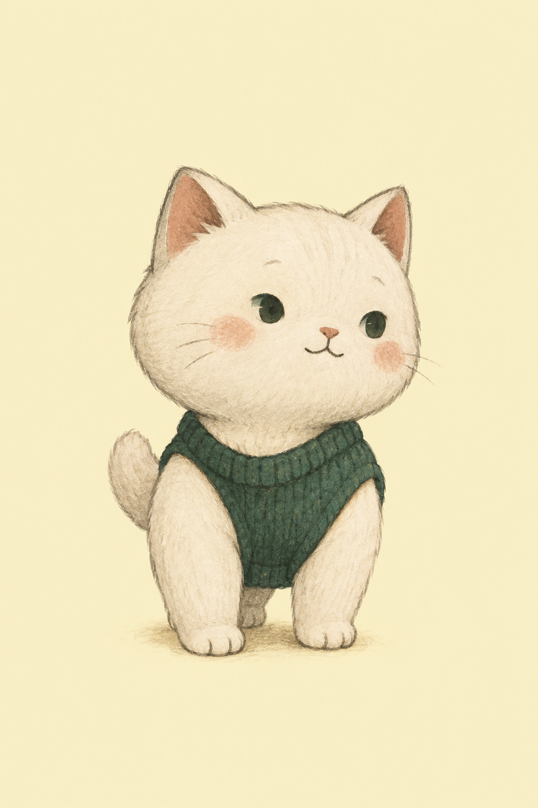
같은 친구인가?
왼쪽은 사용자가 고른 F 원본입니다. 이 그림에는 버터색 장면 배경이 들어 있습니다. 새 12개 자산은 얼굴·눈·니트의 정체성을 이어 받아 투명 배경으로 생성했습니다.
원본 F 파일 보기 ↗{kind=link}
표정으로 읽는 상태
작은 공간에서는 얼굴을 먼저 봅니다. 오른쪽 96 px 미리보기는 실제 축소 시 인상을 확인하는 자리입니다.
몸짓으로 읽는 순간
넓은 공간에서는 니트와 자세를 함께 보여 줍니다. 같은 얼굴, 다른 행동이라는 기준으로 봐 주세요.
앱에서 확인한 모습
아래 8장은 서명된 Android 0.1.0 (versionCode 1) release APK의 실제 영어 에뮬레이터 화면입니다. 이미지를 누르면 원본 크기로 볼 수 있습니다.
{kind=link}
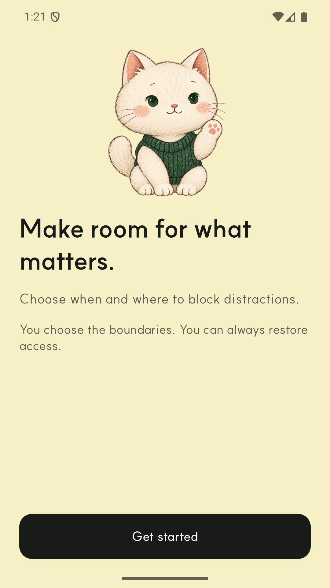
{kind=link}
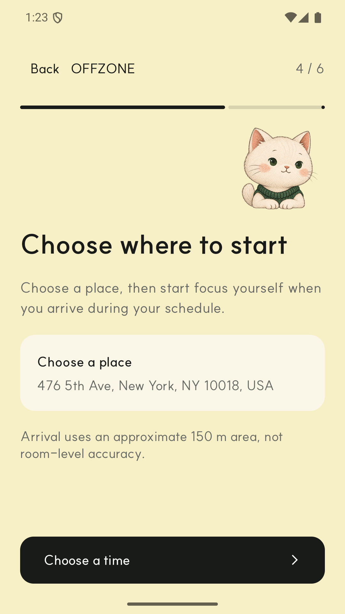
{kind=link}
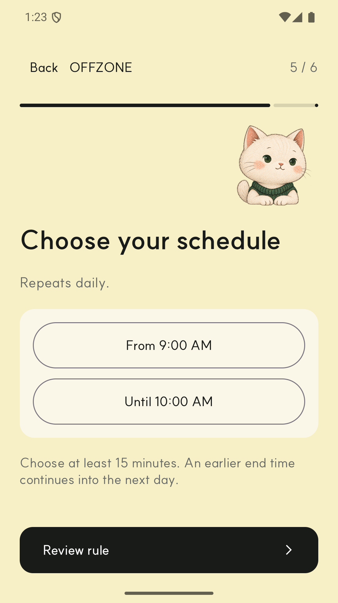
{kind=link}
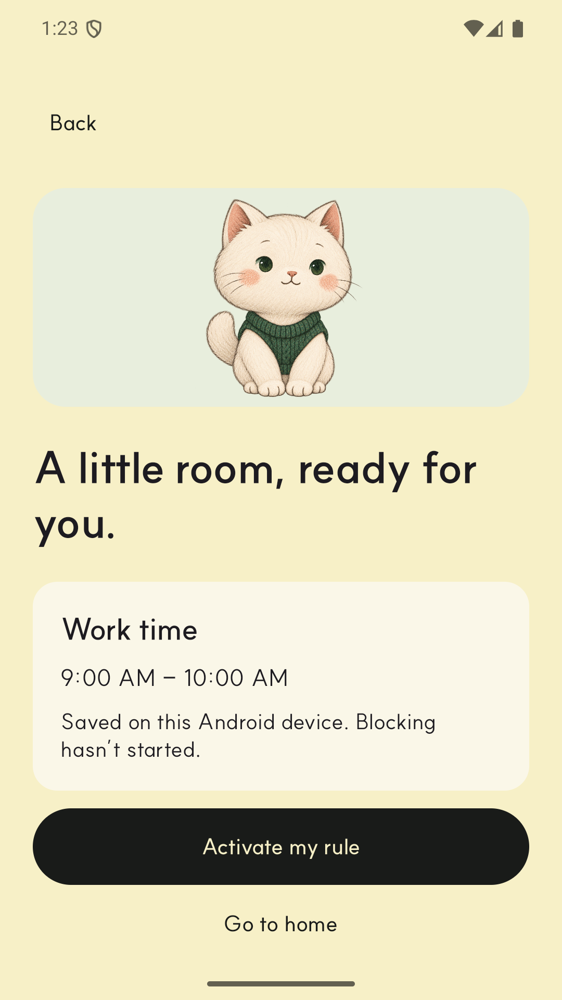
{kind=link}
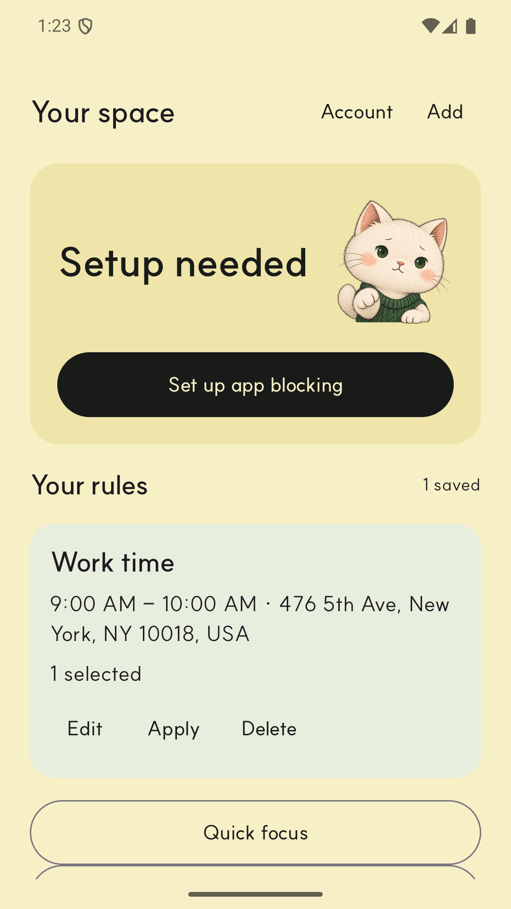
{kind=link}
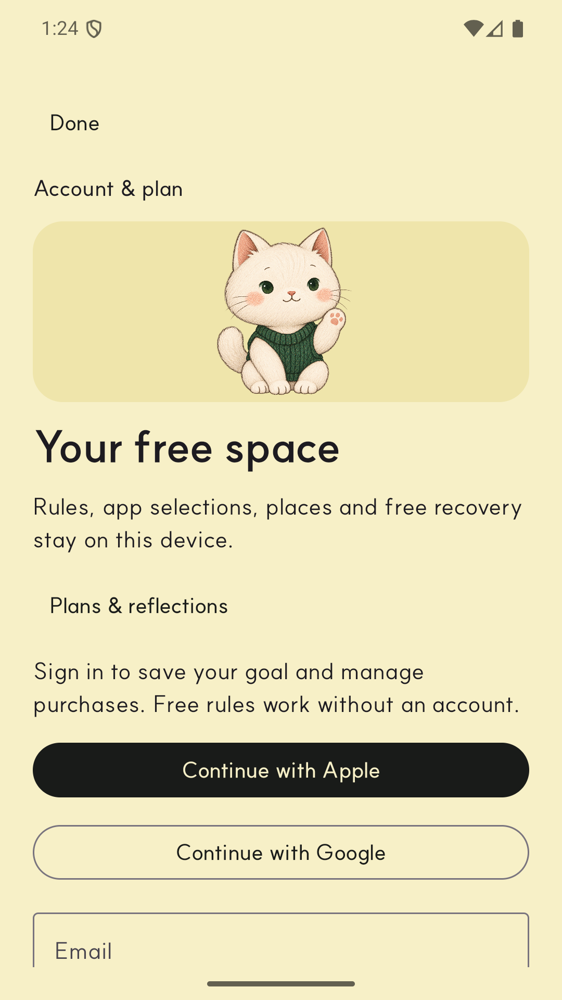
{kind=link}
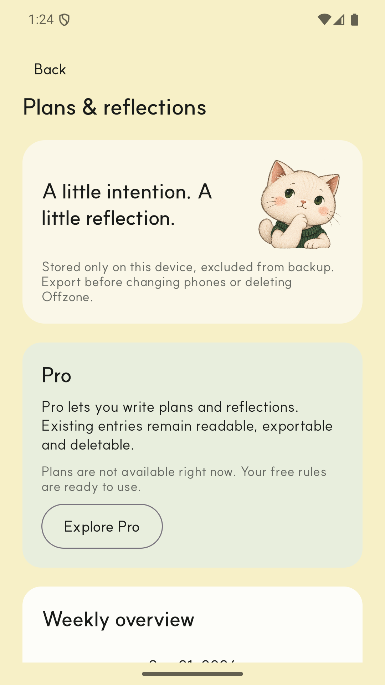
{kind=link}
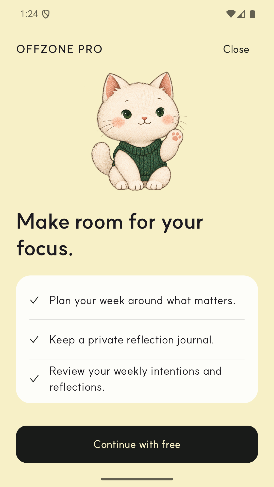
실제 캡처 1080×1920 · 밀도 420 · 2026-09-25. 계정·홈 설정 카드의 SoftButter #EFE5AB를 비교할 수 있습니다. Goal/Rhythm의 아래 옵션은 스크롤로 접근 가능했지만 첫 9:16 화면에서 일부 잘려 스토어 후보에서 제외했습니다. 권한 승인·결제·실기기 동작은 검증하지 않았습니다.
Play 등록 이미지 후보
스크린샷 4장은 위 실제 Android 캡처를 RGB PNG로 저장한 파일입니다. 아래 피처 그래픽은 동일한 투명 Nook 원본으로 만든 홍보용 합성 이미지입니다.
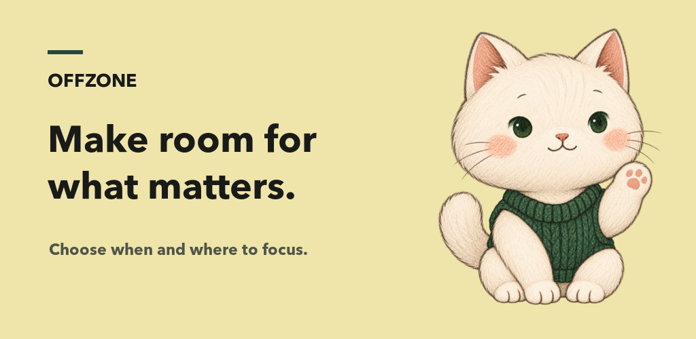
{kind=link}
{kind=link}
{kind=link}
{kind=link}
각 스크린샷은 1080×1920·알파 없는 RGB PNG입니다. 출시 AAB는 코드 2로 별도 빌드됐으며 스크린샷의 캡처 출처는 코드 1입니다.
초기 적용 기록
다음 6장은 Nook를 처음 앱에 연결했을 때의 iOS/Android 캡처입니다. 현재 Android 스토어 제출 후보와 구분해 보존합니다.
{kind=link}
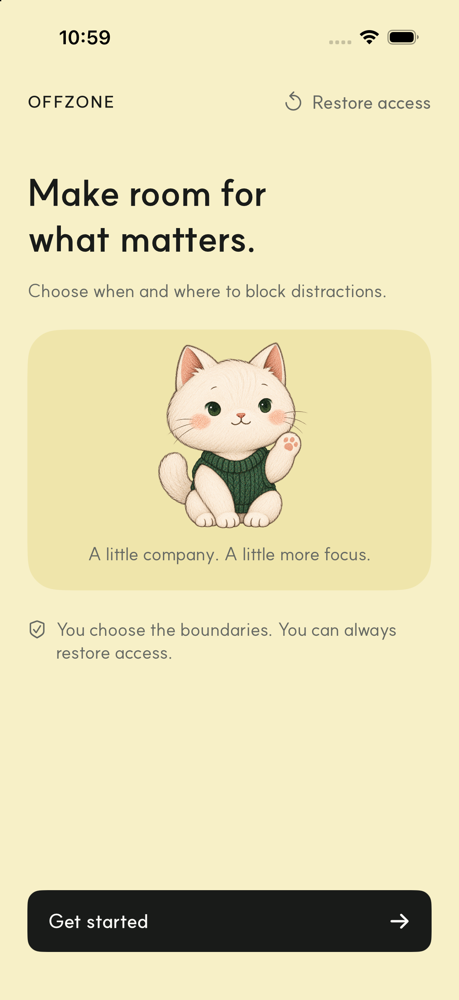
{kind=link}
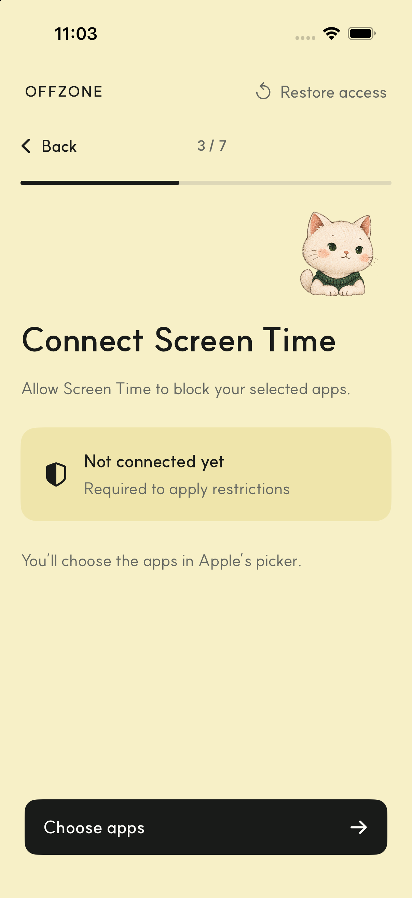
{kind=link}
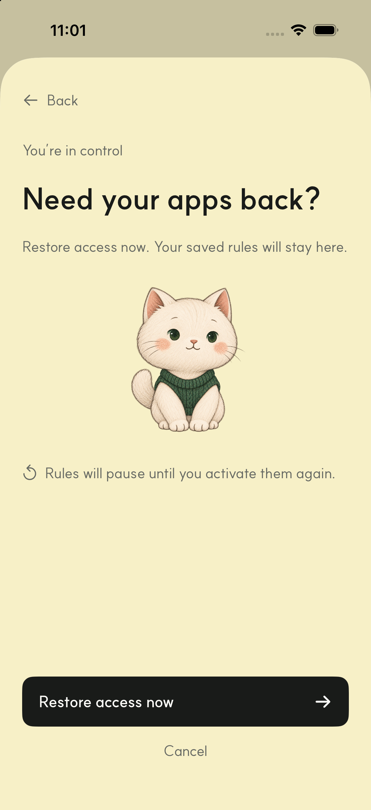
{kind=link}
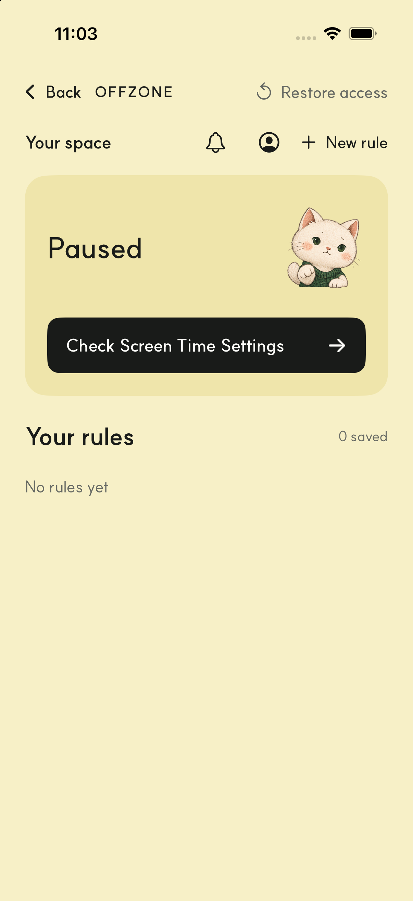
{kind=link}
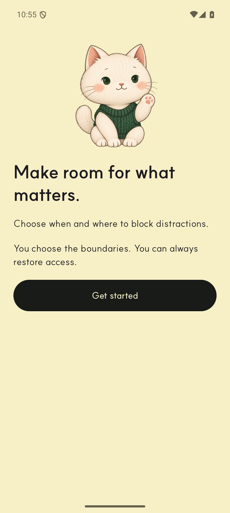
{kind=link}
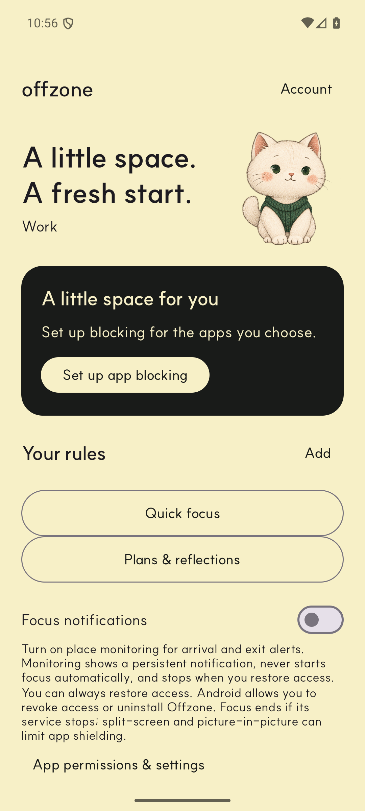
초기 6개 화면에서는 원본의 사각 장면 배경이나 빨강·노랑 가장자리 번짐이 보이지 않았습니다. 이는 시뮬레이터·에뮬레이터 캡처에 한정됩니다. 화면 검수 기록 보기
iOS 배치
기존 RoomSpirit 상태 매핑을 Nook Cat 자산에 연결했습니다.
- 160 × 132 pt 이상의 넓은 자리에서는 가능한 전신 4종을 사용합니다.
- 작은 자리와 작업·완료·주의·실패 상태에서는 표정 8종을 사용합니다.
- 움직임 줄이기 설정과 인사 접근성 동작은 계속 확인합니다.
Android 배치
온보딩·Ready·Home·Account·Pro의 실제 영어 캡처에서 크기와 색을 확인합니다.
- 첫 온보딩은 넓은 전신, 단계 안내는 작은 표정으로 읽힙니다.
- Home과 Account의 SoftButter #EFE5AB, 전체 Butter #F7F0C7, 어두운 CTA의 대비를 함께 봅니다.
- Pro 판매 제안은 이 캡처에서 비활성입니다. 자산 12개가 모두 묶여 있어도 모든 상태가 실제 화면에 노출된 것은 아닙니다.